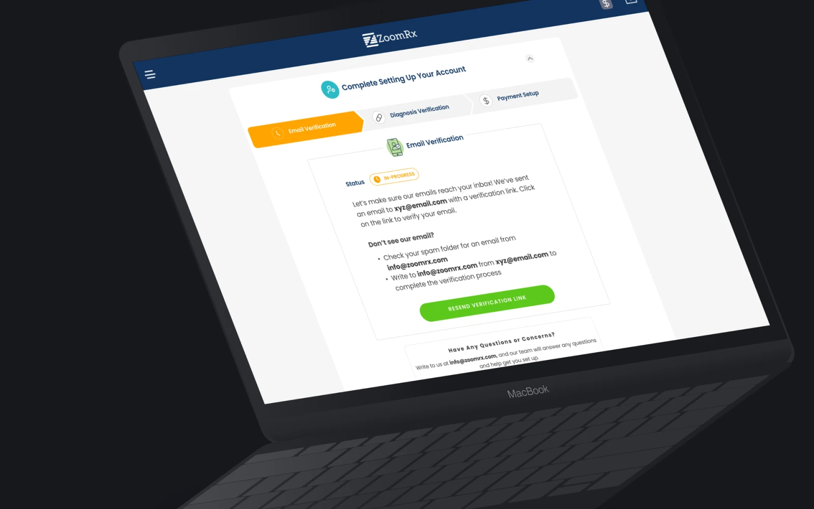
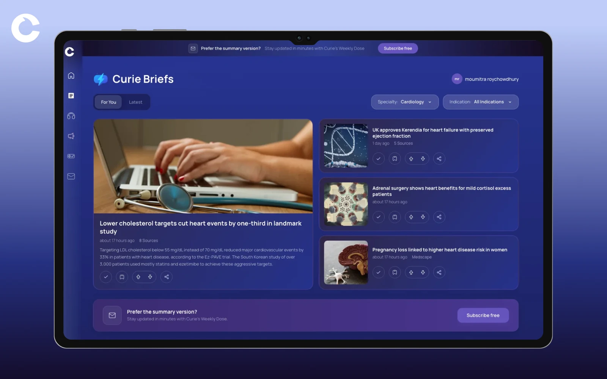
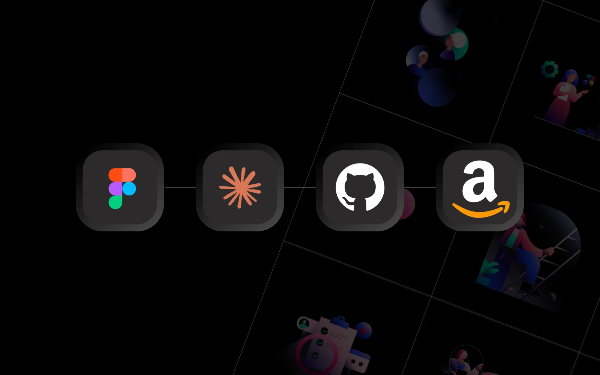
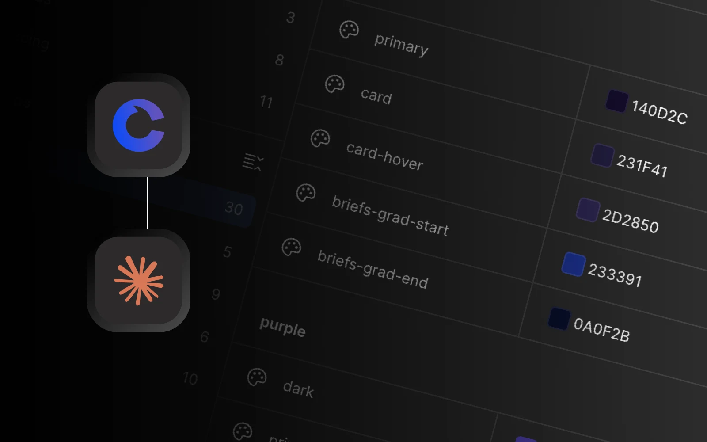

Daily For You pack
Turning a news feed into a daily ritual for physicians: four briefs picked for your specialty, read like stories. Identified impressions went from 1 to 54 a week.
ProductResearchGrowth
Open case study →I design products for doctors and patients at ZoomRx, and I build the systems that keep them consistent: design systems, asset pipelines and AI tools.
Scroll to workMoumita
Roy Chowdhury
Seven years designing for web and mobile, from fintech to healthcare. Today I work across product, brand and design engineering at ZoomRx.
A daily habit for physicians, onboarding, a media product for doctors, and the design system and asset pipeline that sit underneath them. Each one opens a full case study.
Turning a news feed into a daily ritual for physicians: four briefs picked for your specialty, read like stories. Identified impressions went from 1 to 54 a week.

Turning a scattered verification process into one clear step. Credited with lifting patient conversion, still live in 2026.

Building a daily habit for doctors out of a market research panel. Monthly active users grew from 242 to 16.3K.

Getting the design team's icons and illustrations out of Figma and into every internal AI tool. Designed, built and run by me.

One source of truth for Curie that people, code and AI design tools all build from. The whole team designs on top of it in Claude Design.
Most designers hand off a file. I hand off the system that keeps it consistent: the components, the tokens, the pipelines and the AI tools that use them.
In 2026 ZoomRx dissolved its design team. I moved into a new role as Associate Product Consultant on Curie, the product I had been designing since 2024, and now own Curie Briefs: AI-generated clinical news summaries for physicians on curie.md.
Where it started: web templates, brand guidelines, and design contests won to hit project targets.
Led design on a dedicated website project; templates, brand guidelines and marketing decks.
Sole designer on a fintech product, from research and storyboards to 3D mascots and prototypes.
Joined ZoomRx: healthcare interfaces, Curie's web platform, and panelist onboarding for HCPs and patients.
Title changed to Product Designer. Built the Curie Design System, the brand asset pipeline and Claude tooling.
ZoomRx closed its design team. Instead of stepping off, I moved into product.
Now: surface owner for Curie Briefs, from problem definition to shipping and measuring.
Curie Briefs end to end, measured on real physicians only.
Plus a survey testing writing styles before rollout.
Plus Google Search Ads, and a 50-brief dataset for AI quality.
Owning a product surface end to end: user research, prioritisation, experiments, email and paid acquisition, and measurement against real engagement.
End-to-end UX and UI for web and mobile, from flows and research to shipped screens and measurable outcomes.
Tokens, components and documentation that let a small team ship consistent work fast.
Claude skills, plugins and MCP servers that put a brand's assets and rules inside the tools people already use.
Curie, ZoomRx
Surface owner for Curie Briefs: research, shipping and growth against a weekly physician engagement target.
ZoomRx · Chennai (Remote)
Built the Curie Design System, the brand asset pipeline and Claude tooling.
ZoomRx · Chennai
Interfaces for ZoomRx's healthcare products, including Curie's web platform and panelist onboarding.
ALMINDS, for Transnova Fintech · Kolkata
Sole designer on an in-house fintech product, from research to 3D mascots.
hugebinary · Kolkata
Website design, web templates and brand guidelines.
ESolz · Kolkata
Web templates and brand guidelines for client projects, and design contests won.